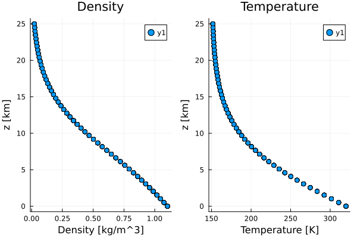
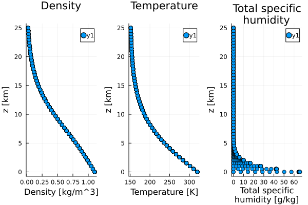
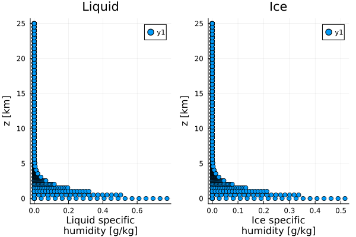

Tested Profiles
These profiles are primarily intended for internal testing of the package. They are not guaranteed to be physically consistent or stable for general use.
Overview
Thermodynamics.jl is tested using a set of thermodynamic profiles specified in test/TestedProfiles.jl. These profiles represent a range of atmospheric conditions and are used to validate the thermodynamic calculations.
The tested profiles serve several functions:
- Validation: Ensure thermodynamic calculations are correct across diverse conditions
- Coverage: Test the full range of atmospheric temperatures and humidities, including both phase equilibrium and intentional phase non-equilibrium states.
- Robustness: Verify numerical stability under various thermodynamic states
- Benchmarking: Provide consistent test cases for performance evaluation
For additional testing scenarios, see Temperature Profiles for pre-defined atmospheric temperature profiles.
Profile Characteristics
The tested profiles cover:
- Altitude range: 0 to 25 km (surface to upper troposphere)
- Temperature range: 150 K to 340 K (cryogenic to hot conditions)
- Humidity range: 0 to 102% relative saturation (
RS) applied to $q_{v, \mathrm{sat}}$ - Density range: Full atmospheric density variation with height (approximately 0.05 to 1.5 kg/m³)
Dry Phase Profiles
Dry phase profiles test thermodynamic calculations without moisture, ensuring the dry air thermodynamics are correctly implemented.
import Thermodynamics as TD
import Plots
import ClimaParams as CP
import Thermodynamics.Parameters as TP
include("../../test/TestedProfiles.jl")
import .TestedProfiles
FT = Float64
param_set = TP.ThermodynamicsParameters(FT)
profiles = TestedProfiles.PhaseDryProfiles(param_set, Array{FT});
(;T, ρ, z) = profiles
p1 = Plots.scatter(ρ, z./10^3, xlabel="Density [kg/m^3]", ylabel="z [km]", title="Density");
p2 = Plots.scatter(T, z./10^3, xlabel="Temperature [K]", ylabel="z [km]", title="Temperature");
Plots.plot(p1, p2, layout=(1,2));
Plots.savefig("tested_profiles_dry.svg");
Key Features (Dry)
- No moisture: All humidity components are zero
- Pressure variation: Follows hydrostatic balance
- Temperature variation: Uses decaying temperature profile
- Density calculation: Computed from ideal gas law
Moist Phase Profiles (Phase Equilibrium)
Moist phase profiles test thermodynamic calculations with moisture in phase equilibrium, including saturation adjustment.
import Thermodynamics as TD
import Plots
import ClimaParams as CP
import Thermodynamics.Parameters as TP
include("../../test/TestedProfiles.jl")
import .TestedProfiles
FT = Float64
param_set = TP.ThermodynamicsParameters(FT)
profiles = TestedProfiles.PhaseEquilProfiles(param_set, Array{FT});
(;T, ρ, q_tot, z) = profiles
p1 = Plots.scatter(ρ, z./10^3, xlabel="Density [kg/m^3]", ylabel="z [km]", title="Density");
p2 = Plots.scatter(T, z./10^3, xlabel="Temperature [K]", ylabel="z [km]", title="Temperature");
p3 = Plots.scatter(q_tot*1000, z./10^3, xlabel="Total specific\nhumidity [g/kg]", ylabel="z [km]", title="Total specific\nhumidity");
Plots.plot(p1, p2, p3, layout=(1,3));
Plots.savefig("tested_profiles_virt_temp.svg");
Key Features (Moist Phase Equilibrium)
- Moisture included: Total specific humidity varies with height
- Saturation adjustment: Phase partitioning ($q_l, q_i$) is determined by phase equilibrium using
condensate_partition. - Wide humidity range: From subsaturated ($RS < 1$) to supersaturated ($RS > 1$) reference conditions.
Moist Phase Profiles (Phase Non-Equilibrium)
Non-equilibrium moist profiles test the package's ability to handle cases where the phase partitioning does not need to follow phase equilibrium assumptions.
import Thermodynamics as TD
import Plots
import ClimaParams as CP
import Thermodynamics.Parameters as TP
include("../../test/TestedProfiles.jl")
import .TestedProfiles
FT = Float64
param_set = TP.ThermodynamicsParameters(FT)
profiles = TestedProfiles.NonEquilMoistProfiles(param_set, Array{FT});
(;T, ρ, q_liq, q_ice, z) = profiles
p1 = Plots.scatter(q_liq*1000, z./10^3, xlabel="Liquid specific\nhumidity [g/kg]", ylabel="z [km]", title="Liquid");
p2 = Plots.scatter(q_ice*1000, z./10^3, xlabel="Ice specific\nhumidity [g/kg]", ylabel="z [km]", title="Ice");
Plots.plot(p1, p2, layout=(1,2));
Plots.savefig("tested_profiles_nonequil.svg");
Key Features (Phase Non-Equilibrium)
- Prescribed partitioning: Condensed phases $q_l$ and $q_i$ are prescribed as a fixed split (e.g., 60/40) of the excess moisture.
- Supersaturation: Intentionally allows vapor pressure to exceed saturation vapor pressure to test diagnostic functions.
Profile Generation
The profiles are generated using:
- Altitude grid: 50 points from 0 to 25 km.
- Humidity grid: 30 relative saturation (
RS) values from 0.0 to 1.02. - Total profiles: 1,500 distinct thermodynamic states (50 altitude points $\times$ 30 saturation values).
- Hydrostatic consistency: Temperature and pressure are derived from a
DecayingTemperatureProfile, ensuring they are mutually consistent with hydrostatic balance and the dry-air equation of state. - Phase Partitioning:
- Phase Equilibrium: Uses
condensate_partitionbased on $T$ and $\rho$. - Phase Non-Equilibrium: Uses a fixed split of excess moisture to test non-equilibrium handling.
- Phase Equilibrium: Uses
Usage in Testing
These profiles are used in the test suite to validate:
- Property calculations: Temperature, pressure, density, humidity
- Energy calculations: Internal energy, enthalpy, potential temperature
- Phase transitions: Saturation adjustment and phase partitioning
- Numerical stability: Convergence and accuracy across parameter space
Integration with Development
The tested profiles are automatically used in:
- Unit tests: Validate individual function correctness
- Integration tests: Verify end-to-end thermodynamic calculations
- Performance tests: Benchmark computational efficiency